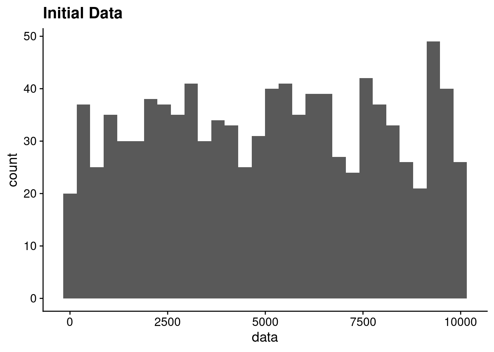
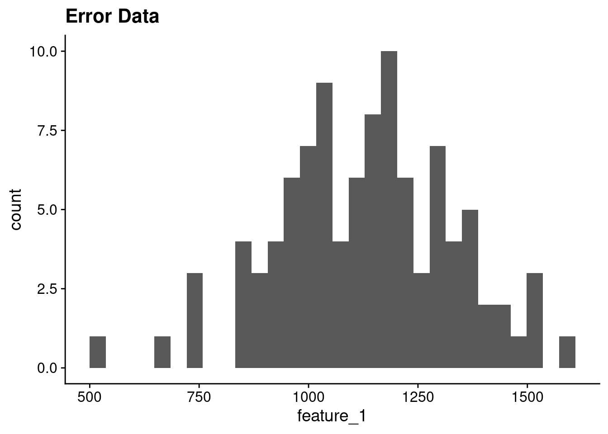
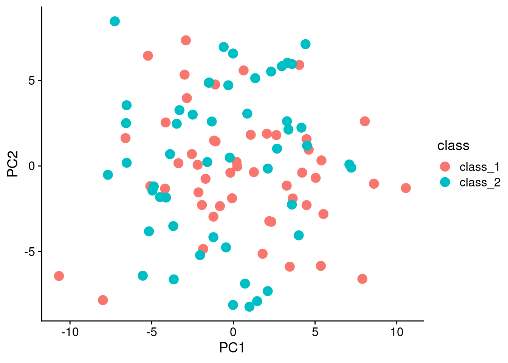
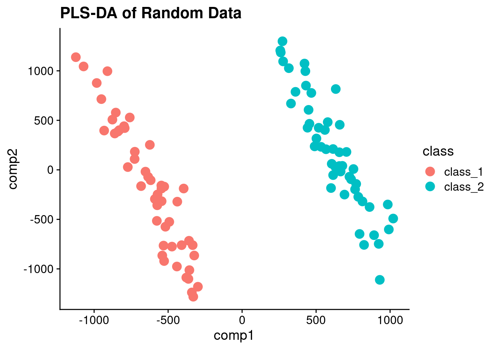
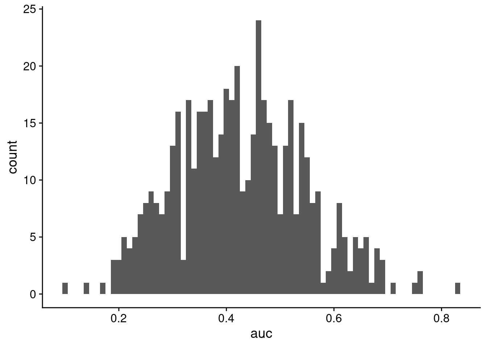

![]()
library(ggplot2)
theme_set(cowplot::theme_cowplot())
library(fakeDataWithError)
set.seed(1234)
n_point <- 1000
max_value <- 10000
init_values <- runif(n_point, 0, max_value)TL;DR
Partial least squares (PLS) discriminant-analysis (DA) can ridiculously over fit even on completely random data. The quality of the PLS-DA model can be assessed using cross-validation, but cross-validation is not typically performed in many metabolomics publications. Random forest, in contrast, because of the forest of decision tree learners, and the out-of-bag (OOB) samples used for testing each tree, automatically provides an indication of the quality of the model.
Why?
I’ve recently been working on some machine learning work using random forests (RF) Breimann, 2001 on metabolomics data. This has been relatively successful, with decent sensitivity and specificity, and hopefully I’ll be able to post more soon. However, PLS (Wold, 1975) is a standard technique used in metabolomics due to the prevalence of analytical chemists in metabolomics and a long familiarity with the method. Importantly, my collaborators frequently use PLS-DA to generate plots to show that the various classes of samples are separable.
However, it has long been known that PLS (and all of it’s variants, PLS-DA, OPLS, OPLS-DA, etc) can easily generate models that over fit the data, and that over fitting of the model needs to be assessed if the model is going to be used in subsequent analyses.
Random Data
To illustrate the behavior of both RF and PLS-DA, we will generate some random data where each of the samples are randomly assigned to one of two classes.
Feature Intensities
We will generate a data set with 1000 features, where each feature’s mean value is from a uniform distribution with a range of 1-10000.
init_data <- data.frame(data = init_values)
ggplot(init_data, aes(x = data)) + geom_histogram() + ggtitle("Initial Data")`stat_bin()` using `bins = 30`. Pick better value with `binwidth`.
For each of these features, their distribution across samples will be based on a random normal distribution where the mean is the initial feature value and a standard deviation of 200. The number of samples is 100.
n_sample <- 100
error_values <- add_uniform_noise(n_sample, init_values, 200)Just for information, the add_uniform_noise function is this:
add_uniform_noisefunction (n_rep, value, sd, use_zero = FALSE)
{
n_value <- length(value)
n_sd <- n_rep * n_value
out_sd <- rnorm(n_sd, 0, sd)
out_sd <- matrix(out_sd, nrow = n_value, ncol = n_rep)
if (!use_zero) {
tmp_value <- matrix(value, nrow = n_value, ncol = n_rep,
byrow = FALSE)
out_value <- tmp_value + out_sd
}
else {
out_value <- out_sd
}
return(out_value)
}
<bytecode: 0x557b6812fbf8>
<environment: namespace:fakeDataWithError>I created it as part of a package that is able to add different kinds of noise to data.
The distribution of values for a single feature looks like this:
error_data <- data.frame(feature_1 = error_values[1,])
ggplot(error_data, aes(x = feature_1)) + geom_histogram() + ggtitle("Error Data")`stat_bin()` using `bins = 30`. Pick better value with `binwidth`.
And we will assign the first 50 samples to class_1 and the second 50 samples to class_2.
sample_class <- rep(c("class_1", "class_2"), each = 50)
sample_class [1] "class_1" "class_1" "class_1" "class_1" "class_1" "class_1" "class_1"
[8] "class_1" "class_1" "class_1" "class_1" "class_1" "class_1" "class_1"
[15] "class_1" "class_1" "class_1" "class_1" "class_1" "class_1" "class_1"
[22] "class_1" "class_1" "class_1" "class_1" "class_1" "class_1" "class_1"
[29] "class_1" "class_1" "class_1" "class_1" "class_1" "class_1" "class_1"
[36] "class_1" "class_1" "class_1" "class_1" "class_1" "class_1" "class_1"
[43] "class_1" "class_1" "class_1" "class_1" "class_1" "class_1" "class_1"
[50] "class_1" "class_2" "class_2" "class_2" "class_2" "class_2" "class_2"
[57] "class_2" "class_2" "class_2" "class_2" "class_2" "class_2" "class_2"
[64] "class_2" "class_2" "class_2" "class_2" "class_2" "class_2" "class_2"
[71] "class_2" "class_2" "class_2" "class_2" "class_2" "class_2" "class_2"
[78] "class_2" "class_2" "class_2" "class_2" "class_2" "class_2" "class_2"
[85] "class_2" "class_2" "class_2" "class_2" "class_2" "class_2" "class_2"
[92] "class_2" "class_2" "class_2" "class_2" "class_2" "class_2" "class_2"
[99] "class_2" "class_2"PCA
Just to show that the data is pretty random, lets use principal components analysis (PCA) to do a decomposition, and plot the first two components:
tmp_pca <- prcomp(t(error_values), center = TRUE, scale. = TRUE)
pca_data <- as.data.frame(tmp_pca$x[, 1:2])
pca_data$class <- as.factor(sample_class)
ggplot(pca_data, aes(x = PC1, y = PC2, color = class)) + geom_point(size = 4)
Random Forest
Let’s use RF first, and see how things look.
library(randomForest)randomForest 4.7-1.1Type rfNews() to see new features/changes/bug fixes.
Attaching package: 'randomForest'The following object is masked from 'package:ggplot2':
marginrf_model <- randomForest(t(error_values), y = as.factor(sample_class))The confusion matrix comparing actual vs predicted classes based on the out of bag (OOB) samples:
knitr::kable(rf_model$confusion)| class_1 | class_2 | class.error | |
|---|---|---|---|
| class_1 | 21 | 29 | 0.58 |
| class_2 | 28 | 22 | 0.56 |
And an overall error of 0.5760364.
PLS-DA
So PLS-DA is really just PLS with y variable that is binary.
library(caret)Loading required package: latticepls_model <- plsda(t(error_values), as.factor(sample_class), ncomp = 2)
pls_scores <- data.frame(comp1 = pls_model$scores[,1], comp2 = pls_model$scores[,2], class = sample_class)And plot the PLS scores:
ggplot(pls_scores, aes(x = comp1, y = comp2, color = class)) + geom_point(size = 4) + ggtitle("PLS-DA of Random Data")
And voila! Perfectly separated data! If I didn’t tell you that it was random, would you suspect it?
Cross-validated PLS-DA
Of course, one way to truly assess the worth of the model would be to use cross-validation, where a fraction of data is held back, and the model trained on the rest. Predictions are then made on the held back fraction, and because we know the truth, we will then calculate the area under the reciever operator curve (AUROC) or area under the curve (AUC) created by plotting true positives vs false positives.
To do this we will need two functions:
- Generates all of the CV folds
- Generates PLS-DA model, does prediction on hold out, calculates AUC
library(cvTools)Loading required package: robustbaselibrary(ROCR)
gen_cv <- function(xdata, ydata, nrep, kfold){
n_sample <- length(ydata)
all_index <- seq(1, n_sample)
cv_data <- cvFolds(n_sample, K = kfold, R = nrep, type = "random")
rep_values <- vapply(seq(1, nrep), function(in_rep){
use_rep <- cv_data$subsets[, in_rep]
cv_values <- vapply(seq(1, kfold), function(in_fold){
test_index <- use_rep[cv_data$which == in_fold]
train_index <- all_index[-test_index]
plsda_cv(xdata[train_index, ], ydata[train_index], xdata[test_index, ],
ydata[test_index])
}, numeric(1))
}, numeric(kfold))
}
plsda_cv <- function(xtrain, ytrain, xtest, ytest){
pls_model <- plsda(xtrain, ytrain, ncomp = 2)
pls_pred <- predict(pls_model, xtest, type = "prob")
use_pred <- pls_pred[, 2, 1]
pred_perf <- ROCR::prediction(use_pred, ytest)
pred_auc <- ROCR::performance(pred_perf, "auc")@y.values[[1]]
return(pred_auc)
}And now lets do a bunch of replicates (100).
cv_vals <- gen_cv(t(error_values), factor(sample_class), nrep = 100, kfold = 5)
mean(cv_vals)[1] 0.4260387sd(cv_vals)[1] 0.1188491cv_frame <- data.frame(auc = as.vector(cv_vals))
ggplot(cv_frame, aes(x = auc)) + geom_histogram(binwidth = 0.01)
So we get an average AUC of 0.4260387, which is pretty awful. This implies that even though there was good separation on the scores, maybe the model is not actually that good, and we should be cautious of any predictions being made.
Of course, the PCA at the beginning of the analysis shows that there is no real separation in the data in the first place.
devtools::session_info()─ Session info ───────────────────────────────────────────────────────────────
setting value
version R version 4.2.1 (2022-06-23)
os Pop!_OS 22.04 LTS
system x86_64, linux-gnu
ui X11
language en_US:en
collate en_US.UTF-8
ctype en_US.UTF-8
tz America/New_York
date 2022-12-02
pandoc 2.19.2 @ /usr/lib/rstudio/resources/app/bin/quarto/bin/tools/ (via rmarkdown)
─ Packages ───────────────────────────────────────────────────────────────────
! package * version date (UTC) lib source
assertthat 0.2.1 2019-03-21 [2] CRAN (R 4.2.1)
P cachem 1.0.6 2021-08-19 [?] CRAN (R 4.2.1)
callr 3.7.2 2022-08-22 [2] CRAN (R 4.2.1)
P caret * 6.0-93 2022-08-09 [?] CRAN (R 4.2.1)
P class 7.3-20 2022-01-13 [?] CRAN (R 4.2.1)
cli 3.4.0 2022-09-08 [2] CRAN (R 4.2.1)
codetools 0.2-18 2020-11-04 [2] CRAN (R 4.2.1)
colorspace 2.0-3 2022-02-21 [2] CRAN (R 4.2.1)
cowplot 1.1.1 2020-12-30 [2] CRAN (R 4.2.1)
crayon 1.5.1 2022-03-26 [2] CRAN (R 4.2.1)
P cvTools * 0.3.2 2012-05-14 [?] CRAN (R 4.2.1)
data.table 1.14.2 2021-09-27 [2] CRAN (R 4.2.1)
DBI 1.1.3 2022-06-18 [2] CRAN (R 4.2.1)
DEoptimR 1.0-11 2022-04-03 [2] CRAN (R 4.2.1)
devtools 2.4.4 2022-07-20 [2] CRAN (R 4.2.1)
P digest 0.6.29 2021-12-01 [?] CRAN (R 4.2.1)
dplyr 1.0.10 2022-09-01 [2] CRAN (R 4.2.1)
ellipsis 0.3.2 2021-04-29 [2] CRAN (R 4.2.1)
P evaluate 0.16 2022-08-09 [?] CRAN (R 4.2.1)
fakeDataWithError * 0.0.1 2022-12-02 [1] Github (rmflight/fakeDataWithError@ccd8714)
fansi 1.0.3 2022-03-24 [2] CRAN (R 4.2.1)
farver 2.1.1 2022-07-06 [2] CRAN (R 4.2.1)
P fastmap 1.1.0 2021-01-25 [?] CRAN (R 4.2.1)
foreach 1.5.2 2022-02-02 [2] CRAN (R 4.2.1)
P fs 1.5.2 2021-12-08 [?] CRAN (R 4.2.1)
future 1.28.0 2022-09-02 [2] CRAN (R 4.2.1)
P future.apply 1.10.0 2022-11-05 [?] CRAN (R 4.2.1)
generics 0.1.3 2022-07-05 [2] CRAN (R 4.2.1)
P ggplot2 * 3.4.0 2022-11-04 [?] CRAN (R 4.2.1)
globals 0.16.1 2022-08-28 [2] CRAN (R 4.2.1)
P glue 1.6.2 2022-02-24 [?] CRAN (R 4.2.1)
P gower 1.0.0 2022-02-03 [?] CRAN (R 4.2.1)
gtable 0.3.1 2022-09-01 [2] CRAN (R 4.2.1)
P hardhat 1.2.0 2022-06-30 [?] CRAN (R 4.2.1)
P highr 0.9 2021-04-16 [?] CRAN (R 4.2.1)
P htmltools 0.5.3 2022-07-18 [?] CRAN (R 4.2.1)
htmlwidgets 1.5.4 2021-09-08 [2] CRAN (R 4.2.1)
httpuv 1.6.6 2022-09-08 [2] CRAN (R 4.2.1)
P ipred 0.9-13 2022-06-02 [?] CRAN (R 4.2.1)
iterators 1.0.14 2022-02-05 [2] CRAN (R 4.2.1)
P jsonlite 1.8.0 2022-02-22 [?] CRAN (R 4.2.1)
P knitr 1.40 2022-08-24 [?] CRAN (R 4.2.1)
labeling 0.4.2 2020-10-20 [2] CRAN (R 4.2.1)
later 1.3.0 2021-08-18 [2] CRAN (R 4.2.1)
lattice * 0.20-45 2021-09-22 [2] CRAN (R 4.2.1)
P lava 1.7.0 2022-10-25 [?] CRAN (R 4.2.1)
P lifecycle 1.0.3 2022-10-07 [?] CRAN (R 4.2.1)
listenv 0.8.0 2019-12-05 [2] CRAN (R 4.2.1)
lubridate 1.8.0 2021-10-07 [2] CRAN (R 4.2.1)
P magrittr 2.0.3 2022-03-30 [?] CRAN (R 4.2.1)
MASS 7.3-58.1 2022-08-03 [2] CRAN (R 4.2.1)
Matrix 1.4-1 2022-03-23 [2] CRAN (R 4.2.1)
P memoise 2.0.1 2021-11-26 [?] CRAN (R 4.2.1)
mime 0.12 2021-09-28 [2] CRAN (R 4.2.1)
miniUI 0.1.1.1 2018-05-18 [2] CRAN (R 4.2.1)
P ModelMetrics 1.2.2.2 2020-03-17 [?] CRAN (R 4.2.1)
munsell 0.5.0 2018-06-12 [2] CRAN (R 4.2.1)
nlme 3.1-159 2022-08-09 [2] CRAN (R 4.2.1)
P nnet 7.3-18 2022-09-28 [?] CRAN (R 4.2.1)
parallelly 1.32.1 2022-07-21 [2] CRAN (R 4.2.1)
pillar 1.8.1 2022-08-19 [2] CRAN (R 4.2.1)
pkgbuild 1.3.1 2021-12-20 [2] CRAN (R 4.2.1)
pkgconfig 2.0.3 2019-09-22 [2] CRAN (R 4.2.1)
pkgload 1.3.0 2022-06-27 [2] CRAN (R 4.2.1)
P pls 2.8-1 2022-07-16 [?] CRAN (R 4.2.1)
plyr 1.8.7 2022-03-24 [2] CRAN (R 4.2.1)
prettyunits 1.1.1 2020-01-24 [2] CRAN (R 4.2.1)
P pROC 1.18.0 2021-09-03 [?] CRAN (R 4.2.1)
processx 3.7.0 2022-07-07 [2] CRAN (R 4.2.1)
P prodlim 2019.11.13 2019-11-17 [?] CRAN (R 4.2.1)
profvis 0.3.7 2020-11-02 [2] CRAN (R 4.2.1)
promises 1.2.0.1 2021-02-11 [2] CRAN (R 4.2.1)
ps 1.7.1 2022-06-18 [2] CRAN (R 4.2.1)
purrr 0.3.4 2020-04-17 [2] CRAN (R 4.2.1)
P R6 2.5.1 2021-08-19 [?] CRAN (R 4.2.1)
P randomForest * 4.7-1.1 2022-05-23 [?] CRAN (R 4.2.1)
Rcpp 1.0.9 2022-07-08 [2] CRAN (R 4.2.1)
P recipes 1.0.3 2022-11-09 [?] CRAN (R 4.2.1)
remotes 2.4.2 2021-11-30 [2] CRAN (R 4.2.1)
renv 0.15.5 2022-05-26 [1] CRAN (R 4.2.1)
P reshape2 1.4.4 2020-04-09 [?] CRAN (R 4.2.1)
P rlang 1.0.6 2022-09-24 [?] CRAN (R 4.2.1)
P rmarkdown 2.16 2022-08-24 [?] CRAN (R 4.2.1)
robustbase * 0.95-0 2022-04-02 [2] CRAN (R 4.2.1)
P ROCR * 1.0-11 2020-05-02 [?] CRAN (R 4.2.1)
P rpart 4.1.19 2022-10-21 [?] CRAN (R 4.2.1)
rstudioapi 0.14 2022-08-22 [2] CRAN (R 4.2.1)
scales 1.2.1 2022-08-20 [2] CRAN (R 4.2.1)
sessioninfo 1.2.2 2021-12-06 [2] CRAN (R 4.2.1)
shiny 1.7.2 2022-07-19 [2] CRAN (R 4.2.1)
P stringi 1.7.8 2022-07-11 [?] CRAN (R 4.2.1)
P stringr 1.4.1 2022-08-20 [?] CRAN (R 4.2.1)
P survival 3.4-0 2022-08-09 [?] CRAN (R 4.2.1)
tibble 3.1.8 2022-07-22 [2] CRAN (R 4.2.1)
P tidyselect 1.2.0 2022-10-10 [?] CRAN (R 4.2.1)
P timeDate 4021.106 2022-09-30 [?] CRAN (R 4.2.1)
urlchecker 1.0.1 2021-11-30 [2] CRAN (R 4.2.1)
usethis 2.1.6 2022-05-25 [2] CRAN (R 4.2.1)
utf8 1.2.2 2021-07-24 [2] CRAN (R 4.2.1)
P vctrs 0.5.1 2022-11-16 [?] CRAN (R 4.2.1)
withr 2.5.0 2022-03-03 [2] CRAN (R 4.2.1)
P xfun 0.33 2022-09-12 [?] CRAN (R 4.2.1)
xtable 1.8-4 2019-04-21 [2] CRAN (R 4.2.1)
P yaml 2.3.5 2022-02-21 [?] CRAN (R 4.2.1)
[1] /home/rmflight/Projects/personal/researchblog_quarto/renv/library/R-4.2/x86_64-pc-linux-gnu
[2] /rmflight_stuff/software/R-4.2.1/library
P ── Loaded and on-disk path mismatch.
──────────────────────────────────────────────────────────────────────────────Reuse
Citation
BibTeX citation:
@online{mflight2015,
author = {Robert M Flight},
title = {Random {Forest} Vs {PLS} on {Random} {Data}},
date = {2015-12-12},
url = {https://rmflight.github.io/posts/2015-12-12-random-forest-vs-pls-on-random-data},
langid = {en}
}
For attribution, please cite this work as:
Robert M Flight. 2015. “Random Forest Vs PLS on Random
Data.” December 12, 2015. https://rmflight.github.io/posts/2015-12-12-random-forest-vs-pls-on-random-data.